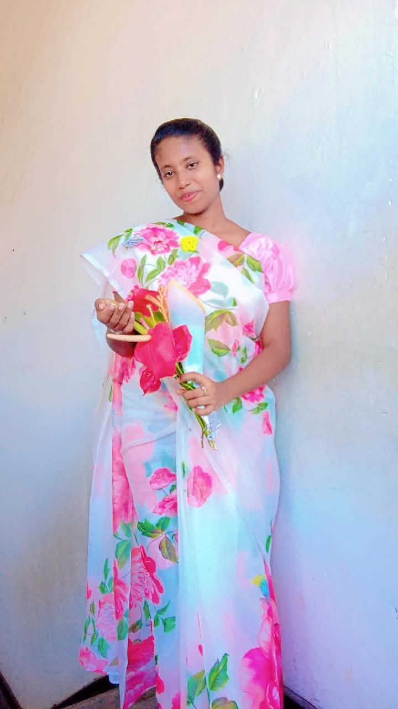

Master Sinhala, Buddhism & Geography with Clarity & Confidence.
Dedicated online tuition for Grades 6 to 11 by Teacher Chamodya Aluthwathegedara. Deep conceptual understanding, simplified past paper techniques, and warm personal guidance designed for outstanding academic results.

Teacher Chamodya
Aluthwathegedara • BA (Hons), PGDE
Accredited Pedagogy
Sri Lanka National Curriculum
The Three Core Academic Disciplines
Comprehensive syllabus navigation tailored strictly for Grades 6 through 11, cultivating high scores through structured analytical learning.
Sinhala Language & Literature
සිංහල භාෂාව හා සාහිත්යය
Mastery of Sinhala grammar (ව්යාකරණ), expressive essay composition (රචනා), literary appreciation (විචාර සාහිත්යය), and extensive O/L past paper discussions.
Buddhism & Buddhist Culture
බුද්ධ ධර්මය සහ ශිෂ්ටාචාරය
Clear Dhamma breakdowns, stanza analysis, moral and philosophical lessons, and term paper question breakdowns with step-by-step marking rubrics.
Geography & Map Marking
භූගෝල විද්යාව සහ සිතියම් සටහන්
Specialized Sri Lanka & World map marking (සිතියම් ලකුණු කිරීම), physical systems, climate charts, and easy memory frameworks for full exam marks.

Interactive Learning That Inspires Confidence
Structured for Academic Success without Stress
Secondary education shouldn’t feel intimidating. Teacher Chamodya bridges complex national syllabus requirements with everyday conversational Sinhala, structured diagrammatic mnemonics, and weekly paper discussions that build genuine mastery.
Bilingual friendly terms with clear Sinhala explanations
Every lesson includes downloadable digital notes
Why Parents and Students Choose Teacher Chamodya
A balanced blend of academic thoroughness and warm personal encouragement.
Methodical Short Notes & Mindmaps
Concise, beautifully arranged summary sheets and visual mindmaps provided before every school term test to make revision effortless.
Interactive Live Zoom Sessions
Friendly, warm classroom environment with active participation where every student feels confident to unmute and ask questions.
Model Papers & O/L Analysis
Deep dive into past decade O/L questions, marking rubrics, and targeted essay structures to eliminate surprises during final exams.
Caring Personal Mentorship
Direct WhatsApp support for school homework doubts, individual paper corrections, and friendly feedback on essays.
Real Results Across Sri Lanka
Hear directly from students and parents who transformed their academic confidence.
"Teacher Chamodya made Sinhala grammar so simple! I used to fear the essay writing and vichara paper, but her step-by-step framework helped me score 88 for my Grade 10 final term."
Senura De Silva
Grade 11 Student • Colombo
"As a parent, I am amazed by how attentive Teacher Chamodya is. Her Geography map marking classes are unmatched. My daughter's marks went from 54 to 92 in just two terms."
Nirosha Jayawardena
Parent (Grade 8 Student) • Kandy
"The Buddhism notes and stanzas breakdown are so structured. She marks our answers individually and points out where we lose marks in essay presentations. Highly recommended!"
Kavindu Rashmika
Grade 10 Student • Galle
Join Teacher Chamodya’s Live Classes This Week
Reserve your seat for live Zoom sessions or request the comprehensive 2025 class schedule and sample short notes via WhatsApp directly.